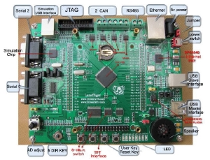
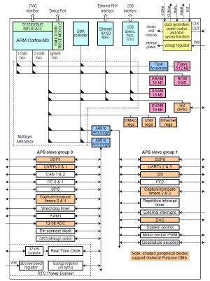
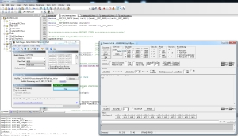
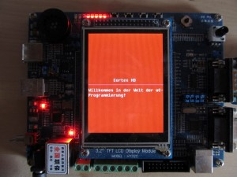
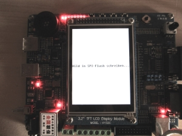
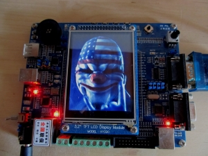

Mikrocontroller/Embedded Systems (ARM)
ARM NXP LPC1768 Development Board + 3.2" TFT LCD Module | Textausgabe über UART | Textausgabe über das TFT LCD-Display | Bild aus SPI-Flash lesen
Was ist ein Mikrocontroller?
Man kann sich einen Mikrocontroller als ein Ein-Chip-Computersystem (System on a Chip, Abk. SoC) vorstellen. Im Gegensatz zu einem Prozessor, der alleine nicht lauffähig ist, beinhaltet ein Mikrocontroller bereits einen Arbeits- und Programmspeicher, sowie auch komplexere Peripheriefunktionen wie verschiedene Bussysteme (CAN, USB, SPI, seriell...). Einen guten Einstieg in dieses faszinierende Thema bietet die deutsch-sprachige Seite www.mikrocontroller.net/.
ARM NXP LPC1768 Development Board + 3.2" TFT LCD Module
Meine ARM-Projekte habe ich mit einem Cortex-M3 durchgeführt. Das verwendete LandTiger Entwicklungsboard mit NXP LPC1768 ARM verfügt über einen 32-Bit-Mikroprozessor (100 MHz), 512 KB on-chip Flash und 64 KB SRAM. Auf dem Board befindet sich ein 3,2" TFT LCD-Display, Ethernet, USB, CAN, SD/MMC und zwei serielle Schnittstellen (UART).
Boardübersicht:
 {kind=link}
{kind=link}
Spezifikation/Manual:
LandTiger Anleitung
LPC17xx Anleitung
Beispielcode (Keil's MDK-ARM)
Entwicklungsumgebung:
Die Programme habe ich in der Programmiersprache C geschrieben und verwende als Toolchain das MDK-ARM Microcontroller Development Kit und als Entwicklungsumgebung μVision4 IDE.
Das folgende Programm dient als kleines Beispiel zur Ansteuerung der GPIO Ports, zur Demonstration lassen wir auf dem Board ein paar LEDs blinken:
#include "lpc17xx_gpio.h" #include "lpc17xx_clkpwr.h" volatile uint32_t temp; void delay(uint32_t del) { uint32_t i; for(i=0; i<del; i++) temp = i; } void LEDBlinkExp() { /* 10101010, d.h. von den Pins 0..7 werden wir 1, 3, 5 und 7 blinken lassen */ unsigned long LED_PINS = ((uint32_t)1<<1)|((uint32_t)1<<3)|((uint32_t)1<<5)|((uint32_t)1<<7); /* LEDs an PORT2 als Ausgang definieren */ GPIO_SetDir(2, LED_PINS, 1); while(1) { /* etwas warten */ delay(1 << 24); /* PORT2 auf low setzen */ GPIO_ClearValue(2, LED_PINS); /* etwas warten */ delay(1 << 24); /* PORT2 auf high setzen */ GPIO_SetValue(2, LED_PINS); } } int main(void) { /* GPIO einschalten */ LPC_SC->PCONP |= ( 1 << 15 ); /* GPIO Clock einschalten */ CLKPWR_ConfigPPWR(CLKPWR_PCONP_PCGPIO, ENABLE); LEDBlinkExp(); return 0; }
Textausgabe über UART
UART ist eine digtiale serielle Schnittstelle über die man Daten empfangen und senden kann. Gerade bei der Entwicklung eines neuen uC-Programms ist sie sehr nützlich, da man zur Laufzeit Debugging-Informationen senden und am PC darstellen kann. Wie das geht, zeige ich an einem abgewandelten Beispiel aus dem Paket LPC175x_6x CMSIS-Compliant Standard Peripheral Firmware Driver Library (Keil, IAR, GNU). Ich werde an dieser Stelle nur das Hauptprogramm zeigen, das komplette Beispiel könnt ihr hier herunterladen.
Die UART-Schnittstelle arbeitet im Interrupt-Mode, zum Verständnis des Programms sollte man sich die Interrupt-Handler-Funktionen
- UART0_IRQHandler
- UART_IntErr
- UART_IntTransmit
- UART_IntReceive
mal genauer anschauen.
Im folgenden Screenshot wurde das Programm (hex-File) in den Flash-Speicher "gebrannt", dazu nutze ich das kostenlose Tool Flash Magic. Rechts im Screenshot ist ein Terminal-Programm zum Ansteuern von seriellen Schnittstellen zu sehen, es ist mit meinem Board über COM3 verbunden, da mein PC über keine seriellen Schnittstellen verfügt, nuzte ich einen Seriell-USB-Adapter. Wenn ich nun unten im Bereich "Transmit" den Buchstaben "r" an den Controller schicke, liefert er mir eine Zeichenkette zurück.
{kind=link}
#include "lpc17xx_uart.h" #include "lpc17xx_libcfg.h" #include "lpc17xx_pinsel.h" /************************** PRIVATE DEFINTIONS *************************/ /* buffer size definition */ #define UART_RING_BUFSIZE 256 /* Buf mask */ #define __BUF_MASK (UART_RING_BUFSIZE-1) /* Check buf is full or not */ #define __BUF_IS_FULL(head, tail) ((tail&__BUF_MASK)==((head+1)&__BUF_MASK)) /* Check buf will be full in next receiving or not */ #define __BUF_WILL_FULL(head, tail) ((tail&__BUF_MASK)==((head+2)&__BUF_MASK)) /* Check buf is empty */ #define __BUF_IS_EMPTY(head, tail) ((head&__BUF_MASK)==(tail&__BUF_MASK)) /* Reset buf */ #define __BUF_RESET(bufidx) (bufidx=0) #define __BUF_INCR(bufidx) (bufidx=(bufidx+1)&__BUF_MASK) /************************** PRIVATE TYPES *************************/ /** @brief UART Ring buffer structure */ typedef struct { __IO uint32_t tx_head; /*!< UART Tx ring buffer head index */ __IO uint32_t tx_tail; /*!< UART Tx ring buffer tail index */ __IO uint32_t rx_head; /*!< UART Rx ring buffer head index */ __IO uint32_t rx_tail; /*!< UART Rx ring buffer tail index */ __IO uint8_t tx[UART_RING_BUFSIZE]; /*!< UART Tx data ring buffer */ __IO uint8_t rx[UART_RING_BUFSIZE]; /*!< UART Rx data ring buffer */ } UART_RING_BUFFER_T; /************************** PRIVATE VARIABLES *************************/ uint8_t menu1[] = "Hello World from Cortex M3!! \n\r"; // UART Ring buffer UART_RING_BUFFER_T rb; // Current Tx Interrupt enable state __IO FlagStatus TxIntStat; /************************** PRIVATE FUNCTIONS *************************/ /* Interrupt service routines */ void UART0_IRQHandler(void); void UART_IntErr(uint8_t bLSErrType); void UART_IntTransmit(void); void UART_IntReceive(void); uint32_t UARTReceive(LPC_UART_TypeDef *UARTPort, uint8_t *rxbuf, uint8_t buflen); uint32_t UARTSend(LPC_UART_TypeDef *UARTPort, uint8_t *txbuf, uint8_t buflen); void print_text(void); /*----------------- INTERRUPT SERVICE ROUTINES --------------------------*/ /*********************************************************************//** * @brief UART0 interrupt handler sub-routine * @param[in] None * @return None **********************************************************************/ void UART0_IRQHandler(void) { uint32_t intsrc, tmp, tmp1; /* Determine the interrupt source */ intsrc = UART_GetIntId(LPC_UART0); tmp = intsrc & UART_IIR_INTID_MASK; // Receive Line Status if (tmp == UART_IIR_INTID_RLS){ // Check line status tmp1 = UART_GetLineStatus(LPC_UART0); // Mask out the Receive Ready and Transmit Holding empty status tmp1 &= (UART_LSR_OE | UART_LSR_PE | UART_LSR_FE \ | UART_LSR_BI | UART_LSR_RXFE); // If any error exist if (tmp1) { UART_IntErr(tmp1); } } // Receive Data Available or Character time-out if ((tmp == UART_IIR_INTID_RDA) || (tmp == UART_IIR_INTID_CTI)){ UART_IntReceive(); } // Transmit Holding Empty if (tmp == UART_IIR_INTID_THRE){ UART_IntTransmit(); } } /********************************************************************//** * @brief UART receive function (ring buffer used) * @param[in] None * @return None *********************************************************************/ void UART_IntReceive(void) { uint8_t tmpc; uint32_t rLen; while(1){ // Call UART read function in UART driver rLen = UART_Receive((LPC_UART_TypeDef *)LPC_UART0, &tmpc, 1, NONE_BLOCKING); // If data received if (rLen){ /* Check if buffer is more space * If no more space, remaining character will be trimmed out */ if (!__BUF_IS_FULL(rb.rx_head,rb.rx_tail)){ rb.rx[rb.rx_head] = tmpc; __BUF_INCR(rb.rx_head); } } // no more data else { break; } } } /********************************************************************//** * @brief UART transmit function (ring buffer used) * @param[in] None * @return None *********************************************************************/ void UART_IntTransmit(void) { // Disable THRE interrupt UART_IntConfig((LPC_UART_TypeDef *)LPC_UART0, UART_INTCFG_THRE, DISABLE); /* Wait for FIFO buffer empty, transfer UART_TX_FIFO_SIZE bytes * of data or break whenever ring buffers are empty */ /* Wait until THR empty */ while (UART_CheckBusy((LPC_UART_TypeDef *)LPC_UART0) == SET); while (!__BUF_IS_EMPTY(rb.tx_head,rb.tx_tail)) { /* Move a piece of data into the transmit FIFO */ if (UART_Send((LPC_UART_TypeDef *)LPC_UART0, (uint8_t *)&rb.tx[rb.tx_tail], 1, NONE_BLOCKING)){ /* Update transmit ring FIFO tail pointer */ __BUF_INCR(rb.tx_tail); } else { break; } } /* If there is no more data to send, disable the transmit interrupt - else enable it or keep it enabled */ if (__BUF_IS_EMPTY(rb.tx_head, rb.tx_tail)) { UART_IntConfig((LPC_UART_TypeDef *)LPC_UART0, UART_INTCFG_THRE, DISABLE); // Reset Tx Interrupt state TxIntStat = RESET; } else{ // Set Tx Interrupt state TxIntStat = SET; UART_IntConfig((LPC_UART_TypeDef *)LPC_UART0, UART_INTCFG_THRE, ENABLE); } } /*********************************************************************//** * @brief UART Line Status Error * @param[in] bLSErrType UART Line Status Error Type * @return None **********************************************************************/ void UART_IntErr(uint8_t bLSErrType) { uint8_t test; // Loop forever while (1){ // For testing purpose test = bLSErrType; } } /*-------------------------PRIVATE FUNCTIONS------------------------------*/ /*********************************************************************//** * @brief UART transmit function for interrupt mode (using ring buffers) * @param[in] UARTPort Selected UART peripheral used to send data, * should be UART0 * @param[out] txbuf Pointer to Transmit buffer * @param[in] buflen Length of Transmit buffer * @return Number of bytes actually sent to the ring buffer **********************************************************************/ uint32_t UARTSend(LPC_UART_TypeDef *UARTPort, uint8_t *txbuf, uint8_t buflen) { uint8_t *data = (uint8_t *) txbuf; uint32_t bytes = 0; /* Temporarily lock out UART transmit interrupts during this read so the UART transmit interrupt won't cause problems with the index values */ UART_IntConfig(UARTPort, UART_INTCFG_THRE, DISABLE); /* Loop until transmit run buffer is full or until n_bytes expires */ while ((buflen > 0) && (!__BUF_IS_FULL(rb.tx_head, rb.tx_tail))) { /* Write data from buffer into ring buffer */ rb.tx[rb.tx_head] = *data; data++; /* Increment head pointer */ __BUF_INCR(rb.tx_head); /* Increment data count and decrement buffer size count */ bytes++; buflen--; } /* * Check if current Tx interrupt enable is reset, * that means the Tx interrupt must be re-enabled * due to call UART_IntTransmit() function to trigger * this interrupt type */ if (TxIntStat == RESET) { UART_IntTransmit(); } /* * Otherwise, re-enables Tx Interrupt */ else { UART_IntConfig(UARTPort, UART_INTCFG_THRE, ENABLE); } return bytes; } /*********************************************************************//** * @brief UART read function for interrupt mode (using ring buffers) * @param[in] UARTPort Selected UART peripheral used to send data, * should be UART0 * @param[out] rxbuf Pointer to Received buffer * @param[in] buflen Length of Received buffer * @return Number of bytes actually read from the ring buffer **********************************************************************/ uint32_t UARTReceive(LPC_UART_TypeDef *UARTPort, uint8_t *rxbuf, uint8_t buflen) { uint8_t *data = (uint8_t *) rxbuf; uint32_t bytes = 0; /* Temporarily lock out UART receive interrupts during this read so the UART receive interrupt won't cause problems with the index values */ UART_IntConfig(UARTPort, UART_INTCFG_RBR, DISABLE); /* Loop until receive buffer ring is empty or until max_bytes expires */ while ((buflen > 0) && (!(__BUF_IS_EMPTY(rb.rx_head, rb.rx_tail)))) { /* Read data from ring buffer into user buffer */ *data = rb.rx[rb.rx_tail]; data++; /* Update tail pointer */ __BUF_INCR(rb.rx_tail); /* Increment data count and decrement buffer size count */ bytes++; buflen--; } /* Re-enable UART interrupts */ UART_IntConfig(UARTPort, UART_INTCFG_RBR, ENABLE); return bytes; } /*********************************************************************//** * @brief Print Welcome Screen Menu subroutine * @param None * @return None **********************************************************************/ void print_text(void) { uint32_t tmp, tmp2; uint8_t *pDat; tmp = sizeof(menu1); tmp2 = 0; pDat = (uint8_t *)&menu1[0]; while(tmp) { tmp2 = UARTSend((LPC_UART_TypeDef *)LPC_UART0, pDat, tmp); pDat += tmp2; tmp -= tmp2; } } /*-------------------------MAIN FUNCTION------------------------------*/ /*********************************************************************//** * @brief c_entry: Main UART program body * @param[in] None * @return int **********************************************************************/ int c_entry(void) { // UART Configuration structure variable UART_CFG_Type UARTConfigStruct; // UART FIFO configuration Struct variable UART_FIFO_CFG_Type UARTFIFOConfigStruct; // Pin configuration for UART0 PINSEL_CFG_Type PinCfg; uint32_t idx, len; __IO FlagStatus exitflag; uint8_t buffer[10]; /* * Initialize UART0 pin connect */ PinCfg.Funcnum = 1; PinCfg.OpenDrain = 0; PinCfg.Pinmode = 0; PinCfg.Pinnum = 2; PinCfg.Portnum = 0; PINSEL_ConfigPin(&PinCfg); PinCfg.Pinnum = 3; PINSEL_ConfigPin(&PinCfg); /* Initialize UART Configuration parameter structure to default state: * Baudrate = 9600bps * 8 data bit * 1 Stop bit * None parity */ UART_ConfigStructInit(&UARTConfigStruct); // Initialize UART0 peripheral with given to corresponding parameter UART_Init((LPC_UART_TypeDef *)LPC_UART0, &UARTConfigStruct); /* Initialize FIFOConfigStruct to default state: * - FIFO_DMAMode = DISABLE * - FIFO_Level = UART_FIFO_TRGLEV0 * - FIFO_ResetRxBuf = ENABLE * - FIFO_ResetTxBuf = ENABLE * - FIFO_State = ENABLE */ UART_FIFOConfigStructInit(&UARTFIFOConfigStruct); // Initialize FIFO for UART0 peripheral UART_FIFOConfig((LPC_UART_TypeDef *)LPC_UART0, &UARTFIFOConfigStruct); // Enable UART Transmit UART_TxCmd((LPC_UART_TypeDef *)LPC_UART0, ENABLE); /* Enable UART Rx interrupt */ UART_IntConfig((LPC_UART_TypeDef *)LPC_UART0, UART_INTCFG_RBR, ENABLE); /* Enable UART line status interrupt */ UART_IntConfig((LPC_UART_TypeDef *)LPC_UART0, UART_INTCFG_RLS, ENABLE); /* * Do not enable transmit interrupt here, since it is handled by * UART_Send() function, just to reset Tx Interrupt state for the * first time */ TxIntStat = RESET; // Reset ring buf head and tail idx __BUF_RESET(rb.rx_head); __BUF_RESET(rb.rx_tail); __BUF_RESET(rb.tx_head); __BUF_RESET(rb.tx_tail); /* preemption = 1, sub-priority = 1 */ NVIC_SetPriority(UART0_IRQn, ((0x01<<3)|0x01)); /* Enable Interrupt for UART0 channel */ NVIC_EnableIRQ(UART0_IRQn); // print welcome screen print_text(); // reset exit flag exitflag = RESET; /* Read some data from the buffer */ while (exitflag == RESET) { len = 0; while (len == 0) { len = UARTReceive((LPC_UART_TypeDef *)LPC_UART0, buffer, sizeof(buffer)); } /* Got some data */ idx = 0; while (idx < len) { if (buffer[idx] == 27) { /* ESC key, set exit flag */ //UARTSend((LPC_UART_TypeDef *)LPC_UART0, menu3, sizeof(menu3)); exitflag = SET; } else if (buffer[idx] == 'r') { print_text(); } else { /* Echo it back */ UARTSend((LPC_UART_TypeDef *)LPC_UART0, &buffer[idx], 1); } idx++; } } // wait for current transmission complete - THR must be empty while (UART_CheckBusy((LPC_UART_TypeDef *)LPC_UART0)); // DeInitialize UART0 peripheral UART_DeInit((LPC_UART_TypeDef *)LPC_UART0); /* Loop forever */ while(1); return 1; } /* With ARM and GHS toolsets, the entry point is main() - this will allow the linker to generate wrapper code to setup stacks, allocate heap area, and initialize and copy code and data segments. For GNU toolsets, the entry point is through __start() in the crt0_gnu.asm file, and that startup code will setup stacks and data */ int main(void) { return c_entry(); } #ifdef DEBUG /******************************************************************************* * @brief Reports the name of the source file and the source line number * where the CHECK_PARAM error has occurred. * @param[in] file Pointer to the source file name * @param[in] line assert_param error line source number * @return None *******************************************************************************/ void check_failed(uint8_t *file, uint32_t line) { /* User can add his own implementation to report the file name and line number, ex: printf("Wrong parameters value: file %s on line %d\r\n", file, line) */ /* Infinite loop */ while(1); } #endif /* * @} */
Textausgabe über das TFT LCD-Display
Im MDK wird eine kleine Garfikbibliothek, bestehend aus den Dateien GLCD.c, HzLib.c und AsciiLib.c, mitgeliefert. Sie ermöglicht einfache Grafikroutinen wie Textausgabe, Linien zeichnen, einzelne Pixel zu setzen und abzufragen. Nachfolgend ein kleines Beispiel, das auch hier heruntergeladen werden kann.
{kind=link}
/* Includes ------------------------------------------------------------------*/ #include "GLCD.h" #include "LPC17xx.h" int main(void) { LCD_Initializtion(); LCD_Clear(Red); GUI_Text(80,144,"Cortex M3",Cyan,Red); LCD_DrawLine(0,166,300,166,Magenta); GUI_Text(0,176,"Willkommen in der Welt der uC-Programmierung!",White,Red); while (1) { } }
Bild aus SPI-Flash lesen
Im nächsten Beispiel lesen wir ein Bitmap aus dem SPI-Flash aus und zeigen es auf dem Display an. Das Bitmap wurde vorher mit Hilfe des Tools Bin2h in ein C-Array BMP_DATA[] umgewandelt, unten findet ihr das Hauptprogramm, den kompletten Beispielcode gibt es hier.
 {kind=link}
{kind=link}
/* Includes ------------------------------------------------------------------*/ #include "SST25VF016B.h" #include "FlashDriver.h" #include "GLCD.h" #include "BMP.c" /* Private typedef -----------------------------------------------------------*/ typedef struct { uint8_t pic_head[2]; uint16_t pic_size_l; uint16_t pic_size_h; uint16_t pic_nc1; uint16_t pic_nc2; uint16_t pic_data_address_l; uint16_t pic_data_address_h; uint16_t pic_message_head_len_l; uint16_t pic_message_head_len_h; uint16_t pic_w_l; uint16_t pic_w_h; uint16_t pic_h_l; uint16_t pic_h_h; uint16_t pic_bit; uint16_t pic_dip; uint16_t pic_zip_l; uint16_t pic_zip_h; uint16_t pic_data_size_l; uint16_t pic_data_size_h; uint16_t pic_dipx_l; uint16_t pic_dipx_h; uint16_t pic_dipy_l; uint16_t pic_dipy_h; uint16_t pic_color_index_l; uint16_t pic_color_index_h; uint16_t pic_other_l; uint16_t pic_other_h; uint16_t pic_color_p01; uint16_t pic_color_p02; uint16_t pic_color_p03; uint16_t pic_color_p04; uint16_t pic_color_p05; uint16_t pic_color_p06; uint16_t pic_color_p07; uint16_t pic_color_p08; }BMP_HEAD; BMP_HEAD bmp; typedef struct { uint16_t x; /* LCD X */ uint16_t y; /* LCD Y */ uint8_t r; /* RED */ uint8_t g; /* GREEN */ uint8_t b; /* BLUE */ }BMP_POINT; BMP_POINT point; /* Private define ------------------------------------------------------------*/ #define BMP_ADDR (1024*0) int main(void) { uint16_t count; // SPI-Flash und LCD initialisieren SPI_FLASH_Init(); LCD_Initializtion(); SPI_FLASH_Test(); SSTF016B_Erase( BMP_ADDR/SEC_SIZE , ( BMP_ADDR+sizeof(BMP_DATA) )/SEC_SIZE +1 ); LCD_Clear(White); // Statusmeldung schreiben GUI_Text(0,152,"Bild in SPI-Flash schreiben...",Black,White); // Bitmap aus BMP.c in SPI-Flash schreiben df_write_open( BMP_ADDR ); for(count=0;count<sizeof(BMP_DATA)/255;count++) { df_write( (uint8_t*)&BMP_DATA[count*255],255); df_write_close(); } df_write( (uint8_t*)&BMP_DATA[count*255],sizeof(BMP_DATA)%255); df_write_close(); // Bild aus SPI-Flash lesen df_read_open( BMP_ADDR ); df_read( (uint8_t *)&bmp, sizeof(bmp)); // Bitmap-Header lesen if( (bmp.pic_head[0]=='B') && (bmp.pic_head[1]=='M') ) { uint16_t tx,ty; uint8_t buffer[1024]; df_read_seek( BMP_ADDR + ( bmp.pic_data_address_h<<16 | bmp.pic_data_address_l ) ); // Bitmap zeilenweise auslesen for(ty=0;ty<bmp.pic_h_l;ty++) { df_read( &buffer[0] , (bmp.pic_w_l)*3 ); // Pixel aus jeder Zeile auslesen for(tx=0;tx<bmp.pic_w_l;tx++) { point.r = *(tx*3 +2+buffer); point.g = *(tx*3 +1+buffer); point.b = *(tx*3 +0+buffer); point.x = tx; point.y = ty; // Pixel anzeigen LCD_SetPoint(point.x ,319-point.y,RGB565CONVERT(point.r,point.g,point.b)); } } } /* Infinite loop */ while (1) ; }